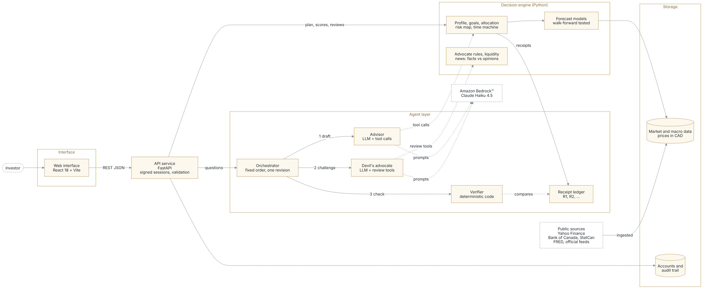
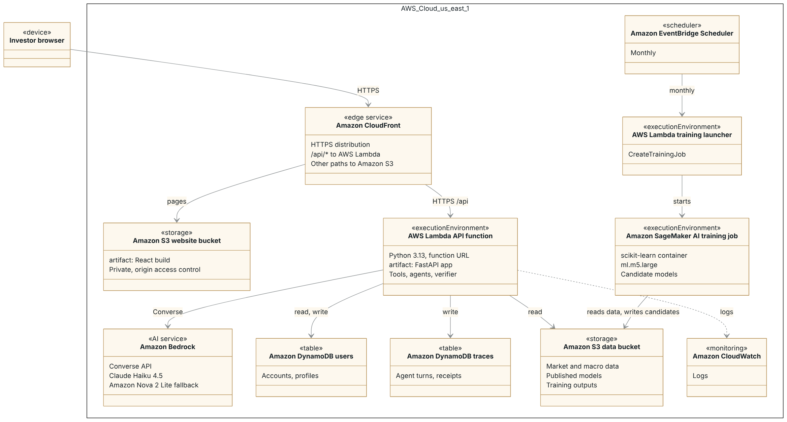

WealthPilot builds a fictitious, goal-by-goal allocation for an investor profile, explains every figure, challenges risky ideas with evidence, and says when it does not know. This document justifies the architecture, with the focus on AWS, then the agents, the data, the validation and the limits.
Numbers come from tested code; the language model orchestrates and explains. Every figure in an agent answer is produced by a deterministic tool, recorded as a numbered receipt (R1, R2, ...), cited in the answer, and checked by a verifier written in code before the investor sees it. A model cannot invent a justification after the fact without the verifier noticing.
Live demo: d3pmr84q14pg9z.cloudfront.net (AWS accounts close on November 16 at 13:59; afterwards the project runs locally with the README guide). Code: github.com/Juanita-HP/WealthPilot. One-pager: docs/WealthPilot_One_Pager.pdf.
Educational simulation: fictitious allocations, no real trades, not personalized financial advice, no confidential banking data.

| Layer | Responsibility | Code |
|---|---|---|
| Web interface | React 18 + Vite single-page app: onboarding and profile, My plan, Time machine, Stocks (search, popular and trending, research page), Devil's advocate, Watchlist. | web/src |
| API service | FastAPI: signed sessions (HMAC tokens), validated inputs (pydantic), one endpoint per screen, a market-data relay for the stock page. | wealthpilot/api.py |
| Decision engine | Deterministic Python: investor profile, goal plans, allocation, six-risk map and metrics, time machine and shocks, devil's advocate rules, data-coverage and liquidity rules, news analysis. | profile, goals, strategist, risks, metrics, time_machine, advocate, coverage, news, macro_news |
| Forecast models | Inflation (ridge vs simple rules), crypto and gold returns (gradient boosting vs historical mean), market timing (logistic regression). Used only as far as their walk-forward tests allow. | inflation, forecast, timing |
| Agent layer | Orchestrator, Advisor and Devil's advocate (LLM with tools), Verifier and receipt ledger (code). | wealthpilot/agents |
| Storage | Market and macro data, model artifacts, accounts and profiles, audit traces. | data, models, accounts |

On the 1st of each month, Amazon EventBridge Scheduler starts a small Lambda launcher, which starts an Amazon SageMaker AI training job in AWS's managed scikit-learn container (ml.m5.large). The job refreshes price histories, retrains the three models with the same walk-forward protocol, and writes candidate models, a comparison report and a snapshot of the exact data used to the S3 data bucket. Nothing goes live automatically: scripts/promote_models.sh shows live vs candidate results and publishes only after a human yes. A first job ran on November 15, 2026. In a simulated run with the image's library versions, retraining on the same data reproduced the live models exactly.
| Service | Role in WealthPilot | Why this choice | Alternative rejected |
|---|---|---|---|
| Amazon CloudFront™ | HTTPS entry point; serves the interface; routes /api/* to Lambda; caching disabled for the API. | One address for site and API (no CORS), HTTPS, edge caching of static files. | S3 static website hosting: public bucket, no HTTPS on the bucket endpoint. |
| Amazon S3™ | Private website bucket (React build); private, versioned data bucket (starter data, macro history, published models, training outputs). | Durable, cheap, versioned: the data behind a result can be identified. Read through origin access control. | Bundling data in the Lambda package: no versioning, a redeploy for every data change. |
| AWS Lambda™ | API function (FastAPI via Mangum, Python 3.13, 2 GB, function URL); training launcher. | Pay per request, scales to zero, no server to patch. The package is built from Linux wheels without Docker (154 MB, limit 250 MB). | Amazon ECS or AWS App Runner: always-on cost for a demo with spiky traffic. API Gateway: about a 30-second limit, too short for an agent turn. |
| Amazon Bedrock™ | Advisor and Devil's advocate through the Converse API: Anthropic Claude Haiku 4.5, with Amazon Nova 2 Lite as fallback if the main model declines. | Managed models inside the AWS boundary, called with the function's IAM role: no model API keys. Converse gives tool use with one interface for both models. | Calling an external model API: keys to store and rotate, data leaving AWS. |
| Amazon DynamoDB™ | Users table (accounts, profiles, token signing key); traces table (agent turns, receipts, verification). | Serverless, on-demand billing, key-value access matches the data; persists across Lambda containers; point-in-time recovery. | Amazon RDS: always-on instance and connection handling for two simple key-value tables. SQLite on Lambda: lost with each container. |
| Amazon SageMaker AI™ | Monthly training jobs; candidate models with metrics charted in the console. | Each model traceable to its code commit, data hashes, library versions and metrics; managed scikit-learn image; no always-on endpoint (predictions are milliseconds in Lambda). | Training on a laptop: no audit trail. A SageMaker endpoint: hourly cost and an extra failure point for millisecond predictions. |
| Amazon EventBridge Scheduler™ | Starts the training launcher on the 1st of each month. | Serverless schedule, no instance. | A cron on a server we would have to keep running. |
| Amazon CloudWatch™ | Logs of the Lambda functions and training jobs; training metrics. | Built in, nothing to deploy. | - |
| AWS IAM™ | One role per function and one for SageMaker, least privilege (read-only S3 where enough, PutObject only under training/ for SageMaker). | No access keys anywhere: deployment from AWS CloudShell, services call each other with roles. | Access keys in configuration: the main way AWS accounts get compromised. |
| Component | Kind | Role | Value it adds |
|---|---|---|---|
| Advisor | LLM + tools | Understands the question, gathers evidence with the tools, drafts the answer at the investor's level, citing receipts. | Turns calculations into an explanation adapted to the person. |
| Devil's advocate | LLM + review tools | Challenges the request and the draft: profile limits, risk jump, concentration, horizon, recency, hype, liquidity, values. States the counterpoint. | Contradicts the investor when needed (the Robert test), and agrees when the data supports them. |
| Verifier | Code | Checks every number in the answer against the cited receipt (rounding-aware, English and French formats); blocks trade directives, guaranteed returns and certain predictions. | Explainability that can be audited, not just asserted; no model approves its own answer. |
| Orchestrator | Code | Fixed order: Advisor, then Devil's advocate, then Verifier; at most one revision, then remaining problems are shown, not hidden. | Predictable cost and latency; failures are visible. |
build_profile, plan_goals, risk_map, what_would_change, propose_allocation, set_portfolio, replay_history, stress_test, compare_allocations, ticker_overview, review_trade, review_allocation, news_digest, macro_news_impact, strategy_lab, invest_now_or_wait, inflation_forecast. Each receipt records the tool, the agent, its inputs and its output; the interface shows a plain-language summary of every receipt.
| Family | Source | Coverage | Transformation |
|---|---|---|---|
| Markets | Organizers' starter set (Yahoo Finance), plus two international funds | 33 assets (stocks, ETFs, gold, bitcoin, ether), daily, Nov 2021 to Nov 2026 | Adjusted prices; one business-day calendar; USD converted to CAD with the Bank of Canada rate |
| Economy | Bank of Canada, Statistics Canada, FRED | Rates, CPI, unemployment, oil, dollar index, since 1995 | Each series used only after its publication date (publication lags), so no backtest sees the future |
| News | Bank of Canada, Federal Reserve, Statistics Canada releases; company headlines | Recent releases; full texts read where robots.txt allows | Decisions read from the text; each headline labelled fact or opinion, with source trust |
| Profiles | 14-question onboarding; 3 case personas | Goals, horizon, finances, tolerance, preferences | Scored by stated rules, validated against persona tests |
| Model or component | Test | Result | What the app does with it |
|---|---|---|---|
| Inflation forecast (12 months) | Walk-forward since 2008, mean absolute error | Mean-reversion rule 1.04 pt, 2% target 1.05, ridge (ML) 1.43, no change 1.38 | Uses the rule with the lowest error and says so |
| Crypto and gold returns (3 months) | Walk-forward, R² vs historical mean, Diebold-Mariano test | R² -34% bitcoin, -3% ether, -7% gold (worse than the mean) | Gauge shows "Not scored"; R² and range shown |
| Market timing (ML entry signal) | Yearly walk-forward 2010-2026, threshold chosen inside training, 0.05% cost per side | Beats holding in 5 to 7 of 17 years; p-values 0.92 to 1.00 | Shown as evidence that timing is hard; never used as a signal |
| Official news reading | Decisions read from texts vs the official series | 11 of 11 decisions found, value and direction correct | Explains which part of the plan a release affects |
| Headline classifier (rules, evaluated version) | 64 hand-labelled headlines | Fact vs opinion 77%, relevance 86% | Labels each headline; never changes the plan |
| Code | pytest: profiles and personas, plan rules, metrics, advocate, API, AWS with fakes | 243 tests pass | Run on every change |
Amazon Web Services, AWS, Amazon CloudFront, Amazon S3, AWS Lambda, Amazon Bedrock, Amazon DynamoDB, Amazon SageMaker AI, Amazon EventBridge, Amazon CloudWatch, AWS Identity and Access Management, AWS CloudFormation, AWS CloudShell and Amazon Nova are trademarks of Amazon.com, Inc. or its affiliates. Claude is a trademark of Anthropic, PBC. Names are used to identify services; no endorsement is implied.